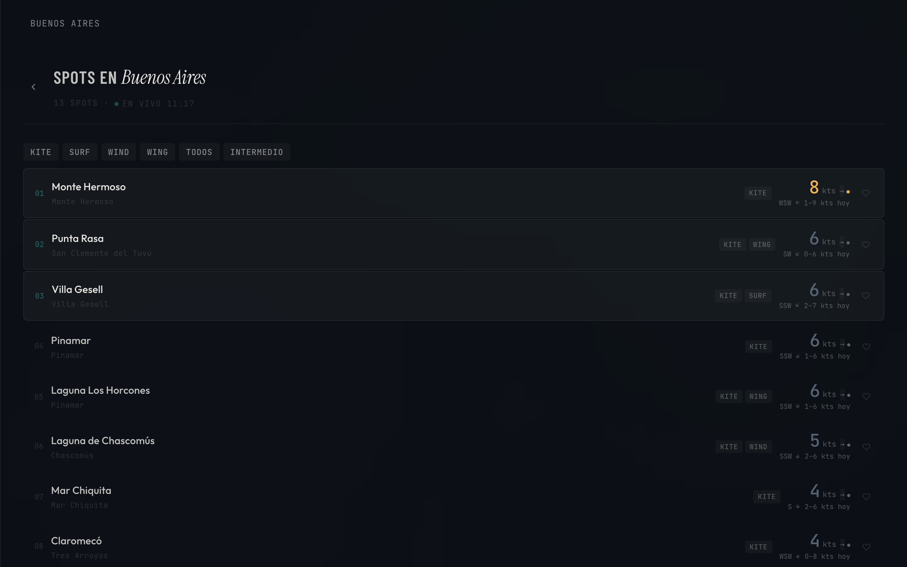

Sopla
Encontrá tu viento — spots de kite, wind y wing en Argentina
El problema
Si hacés kitesurf, windsurf o wingfoil en Argentina, encontrar dónde tirar depende de boca en boca, grupos de WhatsApp o buscar en Google Maps sin filtros útiles. No hay una guía centralizada de spots con condiciones de viento actualizadas.

La solución
Sopla mapea los mejores spots de deportes acuáticos de viento en Argentina, organizados por provincia. Elegís tu zona, explorás spots con datos de viento, y guardás tus favoritos. Todo desde una PWA rápida con auth via Supabase.
Navegación por paneles con transiciones suaves, filtros por disciplina (kite, wind, wing), geolocalización para encontrar spots cercanos, tema claro/oscuro, y diseño mobile-first pensado para consultar desde la playa.
Paleta
Tipografía
Barlow Condensed
Instrument Serif
Outfit
JetBrains Mono
Features
- Spots organizados por provincia con datos de viento
- Filtros por disciplina: kitesurf, windsurf, wingfoil
- Geolocalización para encontrar spots cercanos
- Sistema de favoritos con auth (Supabase)
- Detalle de cada spot: coordenadas, orientación, nivel
- Tema claro/oscuro con persistencia
- Navegación por paneles con transiciones animadas
- Gradient background animado + grain texture
- PWA instalable, mobile-first
- Breadcrumb navigation y bottom nav mobile